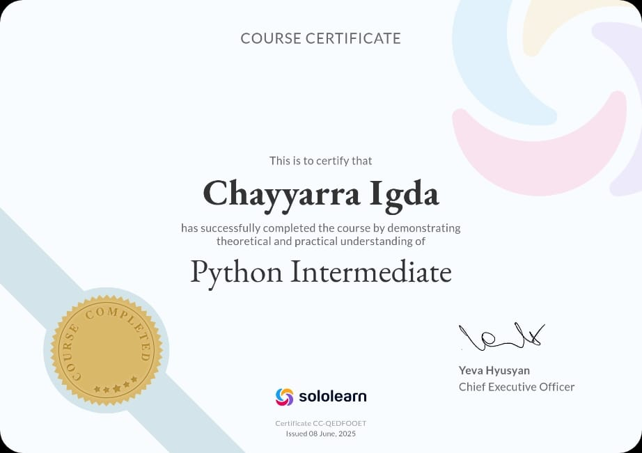
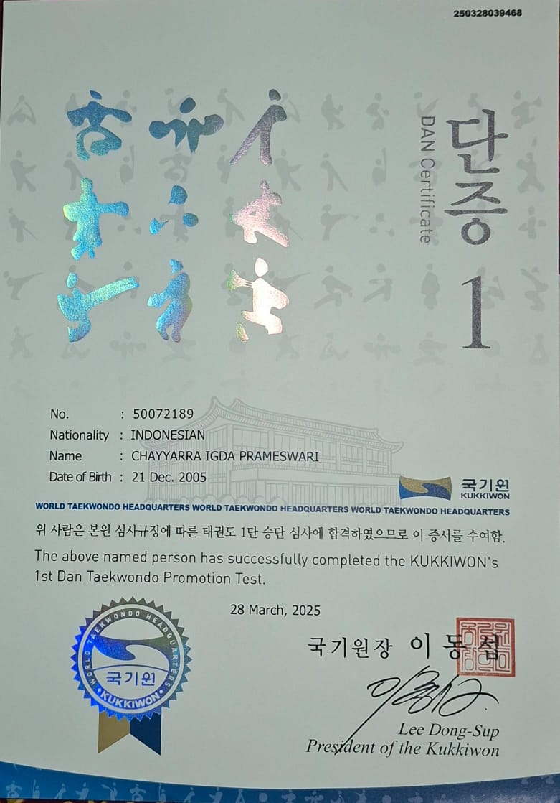
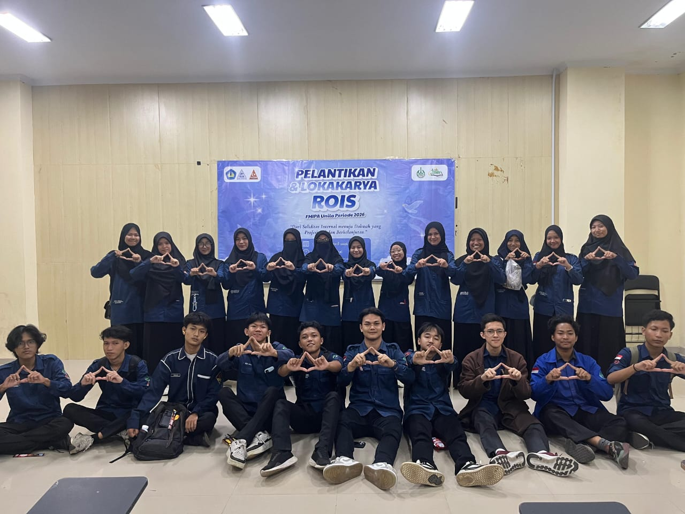

Sertifikasi komprehensif dari level Introduction, Intermediate, hingga Developer. Mencakup OOP, data structures, dan penerapan Python pada proyek nyata.
Penguasaan Word, Excel, dan PowerPoint pada tingkat lanjutan untuk keperluan akademik dan organisasi.

Lisensi atlet resmi dari Pengurus Besar Taekwondo Indonesia. Aktif berkompetisi di tingkat daerah hingga nasional.

Organisasi yang mendekatkan diri kepada Allah